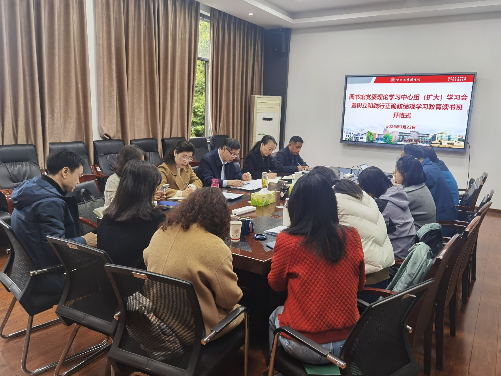

学院通知 · 教学通知
图书馆党委召开理论学习中心组（扩大）学习会暨树立和践行正确政绩观学习教育读书班开班式
发布时间：2026-03-25 10:04:01
3月23日，图书馆党委在工学图书馆五楼会议室召开理论学习中心组（扩大）学习会暨树立和践行正确政绩观学习教育读书班开班式。图书馆领导班子成员、党委委员、纪委委员、党支部书记、各中心（室）主任参加学习。会议由图书馆党委书记秦远清主持。 秦远清首先传达了学校关于举办学习教育读书班的统一部署和工作要求。按照学校党委要求，二级党组织要制定学习教育方案，通过开班式、集中理论学习、集中研讨、查摆问题清单等环节，推动学习教育走深走实。本次读书班为期两天，采取个人自学、集中学习、交流研讨相结合的方式进行，主要任务是深入学习贯彻习近平总书记关于树立和践行正确政绩观的重要论述，切实将思想和行动统一到党中央决策部署上，进一步增强政治自觉、思想自觉和行动自觉，以正确政绩观推动学校“十五五”良好开局。 接着，秦远清领学了《习近平关于树立和践行正确政绩观论述摘编》，并强调，图书馆全体党员干部要带头学习领会论述的丰富内涵；要采用多种方式，提升学习的针对性和有效性；要严明学习纪律要求，端正学习态度，保证学习实效；要坚持学用结合，带着问题联系实际，边学边查边改，将学习成果转化为推动工作的实际行动。 党委副书记兼纪委书记、副馆长杜小军结合习近平总书记在地方工作期间的生动实践领学，重点围绕“科学决策”与“真抓实干”两个方面进行深入阐释。她指出，调查研究是科学决策的前提，图书馆在“十五五”规划编制中，要深入基层、问需于师生，真正把服务做到师生心坎上。在真抓实干方面，她重点阐述了“内用、外招、上请、下挖、近补、远育”的人才培养思路，强调图书馆的人才工作要结合每一位馆员的情况和特长，为馆员成长搭建平台。 与会人员通过学习，深刻理解和认识到要把正确政绩观贯穿于图书馆主要业务工作如资源建设、空间服务、文化育人等，以实干担当推动图书馆事业高质量发展，为学校“双一流”建设贡献智慧和力量。
